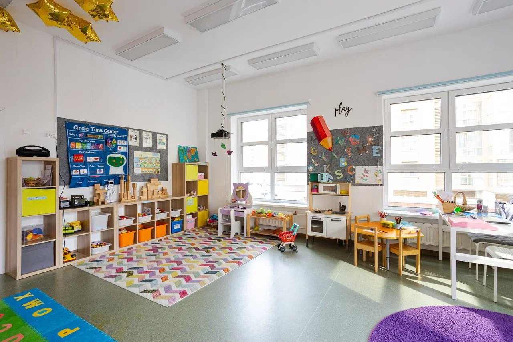
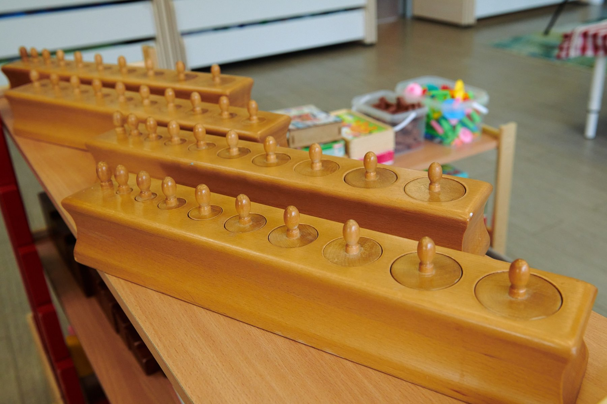
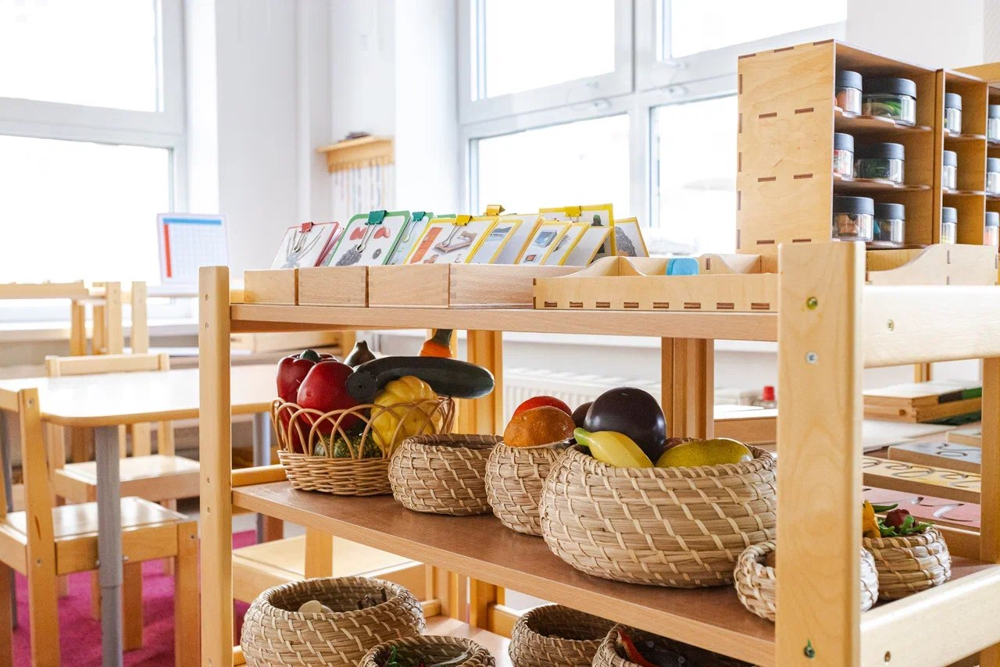
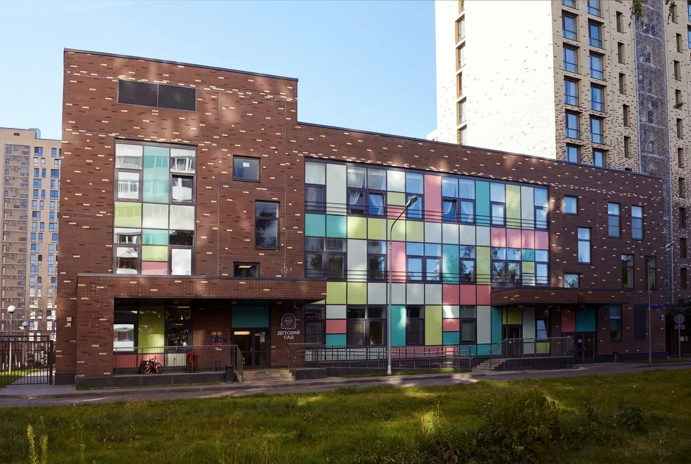
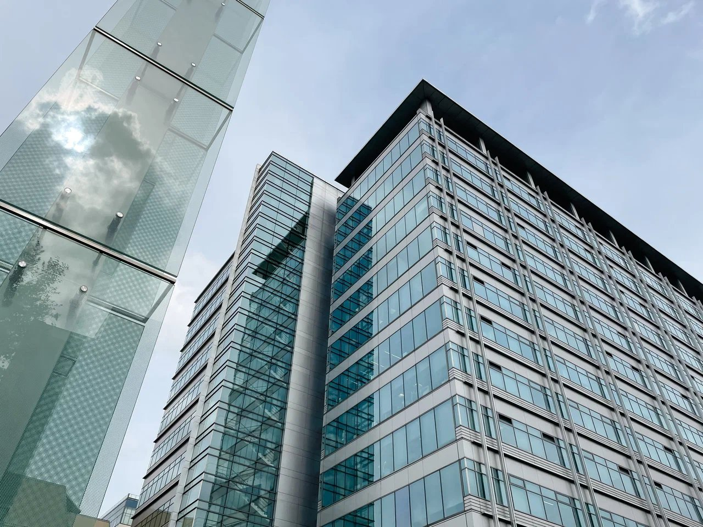
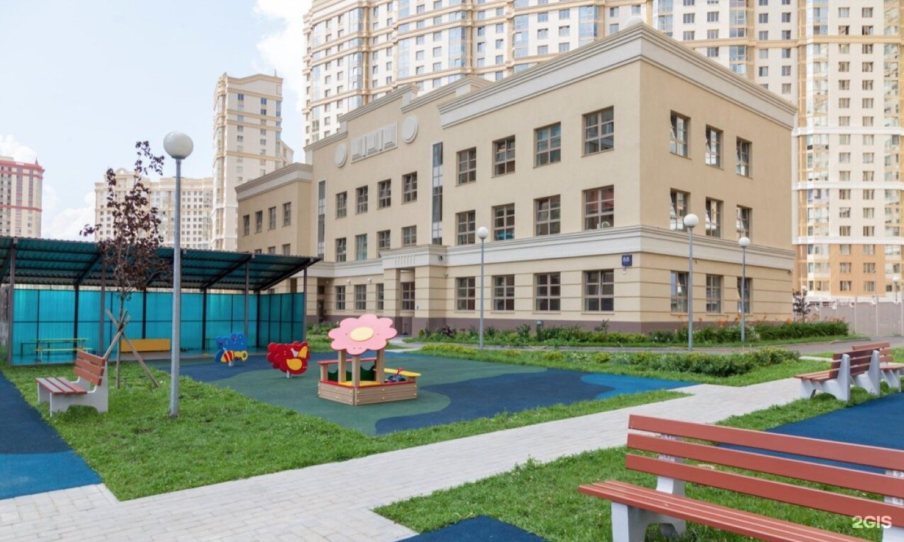

Монтессори-сад в Москве
Подготовленная среда, занятия в темпе ребёнка и английский с носителями языка каждый день. Ребёнок сам выбирает, чем заняться, педагог показывает, наблюдает и помогает, когда это действительно нужно. Три кампуса в Москве.
Что такое Монтессори
Не кружок и не «развивашка». Система, по которой сады и школы работают больше ста лет, и в которой ребёнок сам управляет своей работой.

Откуда взялась программа
Систему создала итальянский врач и педагог Мария Монтессори в начале XX века. В 1907 году она открыла в Риме первый «Дом ребёнка», Casa dei Bambini. Там она наблюдала за детьми и подбирала материалы, к которым они возвращались снова и снова. Из этих наблюдений выросла система, по которой сегодня работают сады и школы во многих странах мира.
На чём она построена
- Главный принцип: «помоги мне сделать это самому».
- Ребёнок от рождения до шести лет впитывает всё, что его окружает. Поэтому среда продумана до мелочей.
- Сначала действие с предметом, потом понятие. Количество можно подержать в руках, и только потом оно становится числом.
- У каждого ребёнка свой темп, и программа под него подстраивается.
- Педагог не ведёт урок для всех. Он показывает материал одному ребёнку, отходит и наблюдает.
Чем программа отличается от обычной группы
Если убрать хотя бы один из шести, это уже не Монтессори, а обычная группа с красивыми деревянными игрушками.
Подготовленная среда
Мебель по росту, открытые низкие полки, у каждого материала своё место. Ребёнок сам берёт работу и сам возвращает её на полку. Беспорядок в среде это сигнал педагогу: что-то в ней устроено неудобно.
Разновозрастные группы
Группы 1,5-3 и 3-6 лет. Младшие смотрят на старших и тянутся за ними. Старшие объясняют и помогают, и так закрепляют то, что уже умеют. Через три года ребёнок проходит путь от младшего до старшего в одной группе.
Свобода выбора в границах
Ребёнок выбирает материал, место и время работы. Правил немного, и они понятны: бережно обращаться с материалом, убирать за собой, уважать чужую работу и не мешать тому, кто занят.
Сензитивные периоды
В определённом возрасте ребёнок особенно восприимчив к порядку, речи, движению, мелким предметам. Педагог замечает такой период и предлагает подходящий материал именно в этот момент, пока интерес максимальный.
Педагог-наблюдатель
Педагог коротко показывает материал один на один и отходит в сторону. Он наблюдает, фиксирует интересы ребёнка и подключается, когда помощь действительно нужна. На группу два взрослых: педагог и ассистент.
Материалы с контролем ошибки
Цилиндр входит только в своё гнездо, а башня из неверно подобранных кубов выглядит неровной. Ребёнок видит ошибку сам и исправляет её без замечаний взрослого. Так формируется спокойное отношение к ошибке.
Как устроен день
Монтессори это часть собственной программы детских садов ONE!. Она работает вместе с билингвальным форматом и подготовкой к школе. Расписание на примере группы 3-6 лет, время примерное.
| 8:00-9:00 | Приход, свободная работа с материалами. Ребёнок сам выбирает, с чего начать день. |
| 9:00-9:20 | Круг: приветствие, календарь, короткая презентация нового материала. |
| 9:20-11:00 | Большой рабочий цикл. Полтора часа непрерывной свободной работы: ребёнок сам выбирает материал и работает без спешки. Английский педагог в это время в среде, говорит с детьми по-английски. |
| 11:00-12:30 | Прогулка и движение. Площадка, спортивные и музыкальные занятия. |
| 12:30-13:00 | Обед. Дети сами накрывают на стол и убирают за собой, это тоже часть практической жизни. |
| 13:00-15:00 | Сон и отдых. |
| 15:00-15:30 | Полдник. |
| 15:30-17:00 | Вторая половина дня. Второй рабочий цикл, английский, творчество, проекты и кружки. |
| 17:00-19:00 | Свободная игра, прогулка, уход домой. |
Монтессори и два языка
В группе два педагога: русскоязычный и носитель английского. Каждый говорит с детьми только на своём языке по принципу «один взрослый, один язык». Материалы по языку есть на обоих языках: шершавые буквы, подвижный алфавит, карточки. К школе ребёнок понимает английскую речь и отвечает простыми фразами, без зубрёжки и домашних заданий.
Пять зон среды
Каждая зона отвечает за свой навык. Ребёнок двигается между ними сам, педагог следит, чтобы ни одна не выпадала надолго.
Переливание, пересыпание, застёжки, шнуровки, уход за растениями, мытьё стола. Развивает моторику, координацию и привычку доводить дело до конца.
Первая зона для малышей 1,5-3 летРозовая башня, коричневая лестница, цилиндры-вкладыши, цветные таблички, шумовые цилиндры. Ребёнок учится различать размер, цвет, форму, звук, вес и текстуру.
База для математики и письмаЧисловые штанги, веретёна, бусины, золотой материал, доски Сегена. Количество можно подержать в руках, и счёт становится понятным. К шести годам дети понимают десятичную систему и складывают четырёхзначные числа.
С 3,5-4 лет, по готовностиШершавые буквы, подвижный алфавит, первые слова, карточки-номенклатура. Работа идёт на русском и английском. Письмо приходит раньше чтения: ребёнок сначала выкладывает слова буквами, потом читает.
Оба языка в одной зонеКарты-вкладыши, глобус, растения и животные, календарь, простые опыты. Так ребёнок знакомится с устройством мира и задаёт первые вопросы «почему».
Естествознание, география, время
Монтессори-группа и обычная группа
Что родитель увидит, если зайдёт в группу в десять утра.
| Что сравниваем | Обычная группа | Монтессори-группа ONE! |
|---|---|---|
| Занятие | Все дети одновременно делают одно задание по плану воспитателя | Каждый ребёнок занят своим материалом, педагог показывает один на один |
| Возраст в группе | Одногодки | Разновозрастные группы 1,5-3 и 3-6 лет |
| Длительность работы | Занятие 15-25 минут, потом смена активности для всех | Рабочий цикл полтора часа, ребёнок сам решает, сколько заниматься одним делом |
| Ошибка | Замечает и исправляет взрослый | Материал устроен так, что ребёнок видит ошибку сам |
| Игрушки и материалы | Игрушки в коробках, достаёт воспитатель | Материалы на открытых низких полках, по одному экземпляру, ребёнок берёт и возвращает сам |
| Английский | Урок два-три раза в неделю | Педагог-носитель в среде каждый день, принцип «один взрослый, один язык» |
| Оценка прогресса | Общая характеристика к концу года | Записи наблюдений и диагностическая карта по каждому ребёнку, встречи с родителями раз в квартал |
Что ребёнок умеет к школе
Список того, что видят педагоги начальной школы ONE! у выпускников Монтессори-групп.
Сам одевается, убирает, накрывает на стол
Режет мягкие продукты, поливает цветы, доводит начатое до конца. Не ждёт, что взрослый сделает за него.
Двадцать-тридцать минут одним делом
Ребёнок может долго заниматься одним материалом, не отвлекаясь. В первом классе это главный навык, которого не хватает большинству.
Ошибка это информация
Материалы с самоконтролем учат спокойно находить и исправлять ошибку. В школе такой ребёнок не боится отвечать у доски.
Понимает десятичную систему
Через бусины и штанги ребёнок к шести годам понимает разряды, складывает и вычитает с переходом через десяток. Просто считать до ста умеют и без этого.
Готов к письму и говорит по-английски
Переливания, застёжки и шершавые буквы готовят руку без прописей. Английский педагог каждый день даёт понимание речи и первые фразы.
Знакомые правила и та же среда
Выпускники садов переходят в подготовительные классы Masters и начальную школу ONE!. Их ждут знакомые правила, билингвальная среда и тот же стандарт компетентностей. Диагностику по программе ONE! принимают в школах по всей Москве.
Где у метода слабые места и как мы их закрываем
Мы говорим об этом на экскурсии, скажем и здесь. Монтессори не волшебная таблетка, и у него есть известные ограничения.
Ребёнок, привыкший выбирать занятие, может первое время тяжело воспринимать «все делают одно и то же». Как закрываем: в группе 3-6 лет в последний год добавляем круги и общие занятия, а переход в школу ONE! идёт по знакомым правилам.
Классический метод делает упор на индивидуальную работу. Как закрываем: вторая половина дня отдана проектам, театру, спорту и свободной игре, где дети работают вместе.
Если гид формально прошёл курсы и не наблюдает за детьми, среда превращается в декорацию. Как закрываем: педагоги с дипломом AMI или РАМИ, методист сети проводит открытые наблюдения в группах каждый месяц.
Исследования показывают преимущества Монтессори-детей в концентрации и самостоятельности, но по академическим результатам к концу начальной школы разница сглаживается. Как закрываем: не обещаем «гениев», обещаем готового к школе ребёнка и показываем диагностику.
Как мы отслеживаем прогресс
- Педагог ведёт записи наблюдений: какие материалы ребёнок выбирает, сколько работает, что уже освоил.
- У каждого ребёнка есть диагностическая карта развития по пяти зонам. По ней педагог планирует следующие презентации материалов.
- Раз в квартал встреча с родителями: что ребёнок умеет, над чем работает, что можно поддержать дома.
- Перед выпуском в школу диагностика по программе ONE!, её результаты принимают в школах по всей Москве.
Как проходит адаптация
Постепенно. Знакомство начинается с бесплатного пробного дня, затем время в саду увеличивается шаг за шагом: первые дни по два-три часа вместе с родителем в соседней комнате, потом до обеда, потом полный день. Педагог каждый день пишет родителям, как прошёл день.
В среднем адаптация занимает две-четыре недели. Если ребёнку тяжело, не торопим: лучше ещё неделя коротких дней, чем слёзы у двери.
Наши детские сады
Монтессори-классы работают во всех трёх кампусах. Выберите ближайший и приходите на пробный день.



Сколько стоит Монтессори-сад ONE!
Цена одинаковая для трёх кампусов, учебный год 12 месяцев. Скидки до 13% в год: семейные и за оплату вперёд.
Все цены и скидкиБилингвальная группа
Международная группа
Вопросы о Монтессори-саде
Остались вопросы? Позвоните: +7 (495) 152-22-21, ответим сразу.
С какого возраста можно прийти в Монтессори-сад?
Чем Монтессори-сад отличается от обычного?
Подойдёт ли Монтессори активному ребёнку?
А если ребёнок выбирает одно и то же занятие каждый день?
Правда ли, что в Монтессори не читают сказки и нет фантазии?
Как проходит адаптация?
Что входит в стоимость?
Можно ли посмотреть группу до решения?
Запишитесь на индивидуальную экскурсию
Покажем Монтессори-класс в рабочее время, познакомим с педагогами и ответим на вопросы. Экскурсия занимает около часа и ни к чему не обязывает.
- Индивидуально, только для вашей семьи
- Бесплатный пробный день для ребёнка
- Покажем среду и материалы, расскажем, как проходит рабочий цикл
- Ответим на вопросы по стоимости и адаптации
Или позвоните: +7 (495) 152-22-21
Ежедневно 09:00-21:00, без выходных